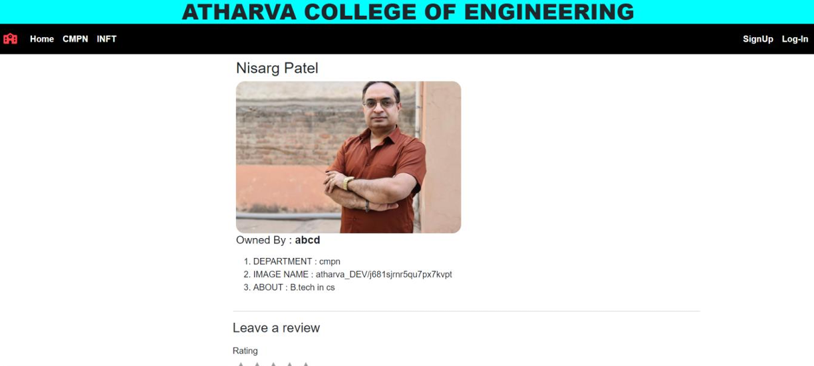

Projects
Project 1

The Café Now Project is a modern initiative aimed at revitalizing and reimagining café spaces to align with contemporary needs. It typically focuses on creating flexible, inclusive environments that cater to diverse audiences, blending technology, sustainability, and community engagement.
Project 2
The know your mentor is designed to provide a user-friendly platform for students to anonymously submit their feedback on various aspects of teaching, including but not limited to, clarity of instruction, effectiveness of delivery, approachability, and overall satisfaction with the course. This feedback is then compiled and presented to faculty members in a structured format, allowing them to reflect on their strengths and areas for improvement.